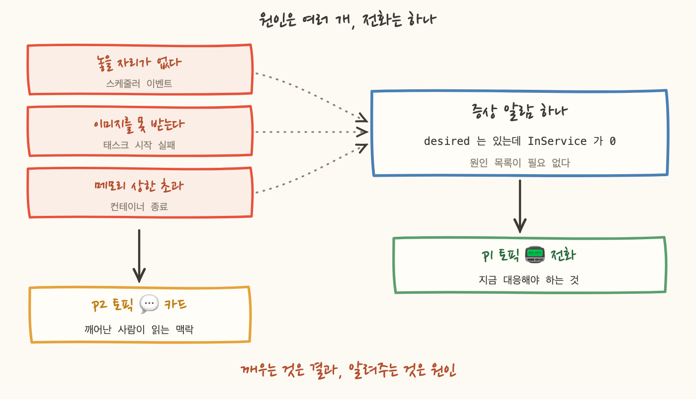
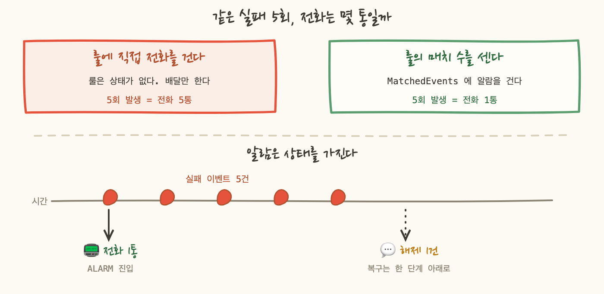

배치 실패 이벤트를 처음 흘려보고 하루치를 세어봤어요. 컨테이너 스케줄러가 "태스크를 놓을 자리를 못 찾았다"고 알려주는 이벤트인데, 낮에도 계속 나오고 있었습니다. 대부분은 서버를 늘리는 중이거나 배포하는 중이었어요. 몇 분 뒤에는 알아서 붙었습니다.
여기에 전화를 걸면 어떻게 되는지는 계산해볼 필요도 없었어요. 사람이 벨소리를 끄고, 그러면 그 뒤에 오는 진짜 장애도 함께 꺼집니다.
그렇다고 그 이벤트를 안 볼 수도 없습니다. 태스크가 안 뜨는 진짜 상황에서도 정확히 같은 이벤트가 오니까요. 이 글은 같은 신호를 어느 티어에 걸지 정하는 규칙과 그 규칙을 한 번 뒤집은 기록입니다.
티어를 셋 뒀어요. 전화가 가는 P1, 슬랙 멘션까지인 P2, 기록만 남는 P3 입니다. 그리고 티어마다 알림 토픽을 하나씩 만들었습니다.
여기서 중요한 것은 개수가 아니라 알람이 어느 토픽을 바라보는지가 곧 티어라는 것이에요. 심각도를 판정해서 어디로 보낼지 고르는 코드가 없습니다. 매핑 테이블도, 조건 분기도 없어요. 알람 모듈은 토픽 세 개의 주소를 맵으로 받고 티어 값으로 그 맵을 색인합니다. 그게 라우팅 전부예요.
두 번째 줄이 이 설계의 이득입니다. 복구 알림은 한 단계 내려서 보냅니다. 새벽에 장애로 한 번 전화를 받고 15분 뒤 자동 복구로 또 전화를 받으면 그건 알림이 아니라 방해예요. 복구는 급하지 않고 기록만 남으면 됩니다. 라우팅이 토픽 하나로 결정되니까 이 규칙이 삼항 연산자 한 줄로 끝납니다.
티어를 어디에 적을지는 계획을 바꿨어요. 설계 문서는 알람 이름 끝에 티어 접미사를 붙이기로 했는데, 알람 이름은 식별자입니다. 이름을 바꾸면 지우고 다시 만드는 것이고, 그러면 알람 히스토리가 사라집니다. 그런데 도입 계획에는 "노이즈를 실측한 뒤 티어를 올린다"가 들어 있어요. 승격할 때마다 승격의 근거였던 히스토리를 날리게 됩니다. 그래서 티어는 태그로 붙였습니다. 잘못 연결된 알람을 찾는 일은 여전히 조회 한 줄이에요. 태그로 묶어서 액션으로 지정된 토픽과 대조하면 됩니다.
그리고 티어를 "얼마나 급한가"가 아니라 "어디로 보내는가"로 읽으면 이상해 보이는 자리가 풀립니다.
급함으로 읽으면 첫 줄이 말이 안 됩니다. 가장 중요한 경로가 끊긴 것을 두 번째 티어로 보내니까요. 목적지로 읽으면 당연합니다. 감시 대상인 경로로 그 경로의 고장을 알릴 수는 없어요. 실제로 이 저장소에는 P2 배달 실패 알람이 P2 로 발화하고 있던 자리가 있었습니다. 코드 주석이 그 무한 루프를 경고해놓고 액션은 그대로 박혀 있었어요.
환경별 제한도 같은 자리에서 걸었어요. 모듈이 환경과 티어를 교차 검증합니다. 운영은 세 티어를 다 쓸 수 있고, 스테이징은 P2 아래, 개발은 P3 만 허용해요. 문서에만 적어두면 언젠가 누군가 개발 환경 알람에 P1 을 넣고 새벽에 개발 서버 때문에 전화가 옵니다. 그런 전화가 세 번 오면 사람은 그 알림을 무시하기 시작하고, 그때부터 P1 은 아무 의미가 없어요.
이걸 모르고 시작하면 알람 화면에서 한참 헤맵니다. CPU 나 메모리처럼 "배치 실패율" 같은 지표는 없어요. 컨테이너 스케줄러가 태스크를 놓지 못하면 그 사실을 이벤트로 발행하고 그걸 이벤트 버스에서 받아야 합니다.
그리고 무엇이 부족했는지는 이벤트 안의 필드 하나에 담겨 있습니다. 메모리가 없으면 그 값이 메모리를 가리키고 CPU 가 없으면 CPU 를 가리켜요. 전화를 받은 사람이 가장 먼저 알아야 하는 값이 그 한 칸입니다.
그러면 그 필드로 조건을 좁히고 싶어집니다. 자원 부족만 받고 설정 실수는 빼는 식으로요. 좁히지 않았습니다. 이 저장소가 반복해서 밟은 함정이 정확히 거기 있었기 때문이에요. 필드 이름을 한 글자 틀리거나 값의 형태를 잘못 짚으면, 룰은 아무것도 매치하지 않으면서 배포된 것처럼 보입니다. 커버리지 표에는 체크가 찍히고 계획도 적용도 성공하고, 아무도 아무것도 감시하지 않아요.
P1 에서는 이 판단의 무게가 다릅니다. 기록용이라면 넓게 받아도 비용이 0 이지만 P1 은 넓게 받는 만큼 전화가 늘어요. 그래도 넓은 쪽을 골랐습니다. 놓치는 P1 이 시끄러운 P1 보다 나쁘다고 봤어요. 실제 이벤트의 값을 눈으로 보고 나서 좁힐지 정하기로 했습니다.
여기가 이 글의 제목입니다. P1 은 원인이 아니라 "서비스가 실제로 부족한 상태"에 걸었어요.
증상 쪽 조건의 이점은 원인의 목록을 몰라도 된다는 것입니다. 자리가 없어서든, 이미지를 못 받아서든, 앱이 기동에 실패해서든, 결과가 "서비스 중인 대수가 0" 이면 다 걸립니다. 원인별로 알람을 만들면 목록에서 빠진 원인은 영원히 안 잡히는데, 증상 하나는 그 목록 자체가 필요 없어요.
대신 증상 알람만으로는 왜 그런지를 알려주지 못합니다. 그래서 원인 이벤트를 버리지 않고 한 단계 아래 티어로 보냈어요. 전화로 깬 사람이 슬랙을 열면 같은 시각의 원인 카드가 함께 있습니다. 깨우는 것은 증상이고, 원인은 깨어난 사람이 읽을 자료입니다.
이 규칙을 안 지켰을 때 무슨 일이 나는지도 실제로 봤어요. 배치 클러스터에서 태스크 종료 코드로 실패를 가르는 룰을 하나 만들었는데, 배포마다 전화가 왔습니다. 배포 중에 스케줄러가 옛 태스크를 멈추면 컨테이너가 종료 신호를 받습니다. 앱이 그걸 정상 종료로 처리하지 않아 종료 코드가 0 이 아니게 된 것이었어요.
고치는 방법은 "누가 멈췄는가"를 말해주는 필드로 바꾸는 것이었습니다. 스케줄러가 멈춘 것과 태스크가 스스로 죽은 것은 그 값으로 갈립니다. 그중에서도 "시작 자체를 못 했다"는 값만 전화로 올렸어요. 그 값은 정상인 경우가 없습니다. 해석의 여지가 0 이에요.
남은 절반은 정직하게 적어뒀습니다. 컨테이너가 스스로 죽는 쪽은 이 배치가 서비스 형태로 도는 탓에 정상 완료와 크래시가 같은 값으로 나옵니다. 그 둘을 아직 못 가르므로 전화를 걸지 않고 기록만 남겨요. 알고 배포한 공백입니다.

위 규칙대로면 "놓을 자리가 없다" 이벤트는 원인이니까 P1 이 아닙니다. 실제로 감지 목록에는 단발 발생은 기록만 으로 적혀 있었어요. 그걸 P1 으로 올렸습니다.
근거는 한 줄이에요. 배치할 곳이 없으면 태스크가 뜨지 않습니다. 그건 기록할 사건이 아니라 전화를 받을 사건이에요. 자리가 없다는 것은 원인이면서 동시에 "용량이 실제로 부족하다"는 결과이기도 합니다. 3장의 규칙과 충돌하지 않는 이유가 그것입니다. 규칙이 거르려던 것은 결과로 이어지지 않는 원인이었어요.
다만 대가가 있고, 그건 감추지 않고 적었습니다. 이벤트 룰은 셀 수 없습니다. 설계 문서가 적어둔 "5분 안에 3회 이상" 을 구현할 수단이 룰에는 없어요. 세려면 함수나 로그 지표 필터를 붙여야 하는데 둘 다 도입하지 않았습니다. 그래서 지금은 발생마다 전화입니다.
더 정직하게 적으면, 발생 빈도를 측정하지 않은 상태로 P1 을 붙여 배포했어요. 용량이 빡빡한 클러스터에서 한 배포에 실패가 연달아 나면 전화도 연달아 옵니다. 설계 문서의 "3회 이상" 과 감지 목록의 기록만 두기는 둘 다 이 상황을 피하려던 장치였고 그 장치를 알고 뺐습니다. 되돌리는 순서까지 코드 주석에 적어뒀어요.
그리고 배치 클러스터 쪽에서는 3번 없이 세는 방법을 찾았습니다. 이게 이번 작업에서 가장 마음에 든 자리예요.
룰은 셀 수 없지만, 룰이 몇 건을 매치했는지는 지표로 발행됩니다. 그러면 그 지표에 알람을 걸 수 있어요. 알람은 룰과 달리 상태를 가집니다. 한 번 ALARM 이 되면 정상으로 돌아갈 때까지 다시 통지하지 않아요. 그래서 연달아 나는 실패가 전화 한 통이 되고 복구되면 해제 통지가 한 번 옵니다.

온콜을 먼저 붙이면 무엇을 P1 으로 볼지 기준이 없어 새벽에 무의미한 전화를 받는다는 우려가 있었어요. 실제로 저희는 순서를 바꿔 호출 경로를 먼저 붙였습니다. 그러면 그 우려에 무엇으로 답하나요.
런북으로 답했습니다. 그리고 그걸 사람의 성실함에 맡기지 않고 모듈이 강제하게 했어요.
기본값이 없으니 안 넣으면 변수 평가 단계에서 실패합니다. 계획을 돌리기도 전에 막혀요. 그래서 알람을 추가하려면 먼저 런북 항목을 만들어야 하고, 런북을 쓰다 보면 전화를 받은 사람이 할 수 있는 일이 없다는 것을 자기가 먼저 알게 됩니다. 그러면 그 항목은 P1 이 아니에요.
그 URL 은 장식이 아닙니다. 알람 설명 칸에 들어가고 그 설명은 슬랙 카드 본문에 그대로 실려요. 슬랙 카드는 알람 형식을 그대로 렌더하기 때문에 저희가 통제할 수 있는 것은 알람 이름과 설명 두 개뿐입니다. 새벽에 깬 사람이 클릭할 수 있는 유일한 링크가 그 한 줄이에요.
같은 이유로 모듈에 사람이 읽을 한 문장을 넣는 칸을 따로 만들었습니다. 규칙은 하나예요. 지표 이름을 반복하지 않습니다. 그건 카드에 이미 있어요. 그 칸에는 "무엇이 깨졌고 지금 무엇이 안 되고 있는가" 를 씁니다.
설계 문서에는 억제 장치가 있었어요. 상위 원인 알람이 ALARM 상태일 때 하위 알람의 액션을 막고, 복합 알람이 대표로 전화를 거는 구성입니다. 근거는 타당했습니다. DB 페일오버 한 건에 P1 알람이 다섯 개 걸려 있으면 전화가 다섯 통 오고, 그러면 사람이 전화를 안 받기 시작하니까요.
그걸 뒤집었습니다. 이유가 둘이에요.
첫째, 그 전제는 알람 145개 규모를 상정한 것이었고 그 시점의 실제 알람은 19개였습니다. 도구를 문제보다 먼저 만들면 도구의 결함이 문제가 됩니다.
둘째가 결정적이었어요. 이 구조는 실패 방향이 나쁩니다. 모듈에는 "이 알람이 직접 발화하는가" 를 정하는 값이 있었고 기본값이 거짓이었습니다. 값을 안 넘기면 알람은 만들어지되 아무 데도 보내지 않아요. 콘솔에서는 정상으로 보이고 계획도 검증도 아무 말을 하지 않습니다.
1차 알람의 나머지를 배포하려다 이것이 드러났습니다. 열한 개가 그 값 없이 작성돼 있었어요. 그대로 나갔으면 알람 열한 개가 만들어지고 아무도 그것을 받지 못한 채 감시되고 있다고 믿었을 겁니다. 대표로 전화를 걸어줄 복합 알람은 그때 하나도 만들지 않은 상태였어요.
그리고 되돌릴 조건을 숫자로 못 박았습니다. 한 사건에 전화가 세 통 이상 온 일이 두 번 생기면 복합 알람 모듈을 만들고 그 묶음부터 무음으로 옮깁니다. 알람이 50개를 넘으면 선제적으로 재검토해요.
지금은 그 두 조건 위에 있습니다. 알람은 200개를 넘었고, DB 한 대가 페일오버하면 이벤트 구독 하나에 재시작 알람 둘, 복제 지연 하나로 최대 네 통이 갈 수 있어요. 코드 주석에 그 경로를 계산해서 적어뒀습니다. 감수한다는 것과 모른다는 것은 다릅니다. 실제로 네 통을 받는 날이 오면 그때 복합 알람을 만들 예정이에요.